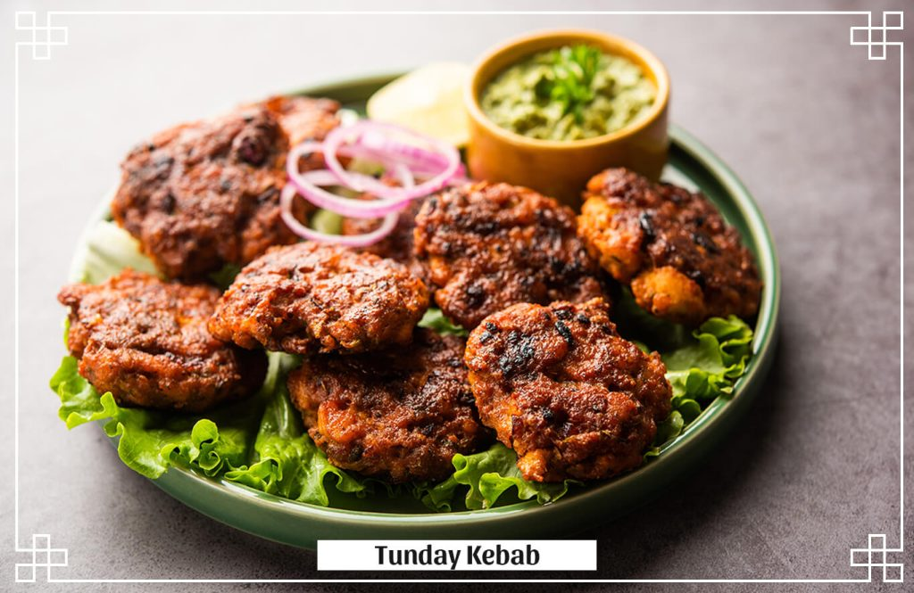
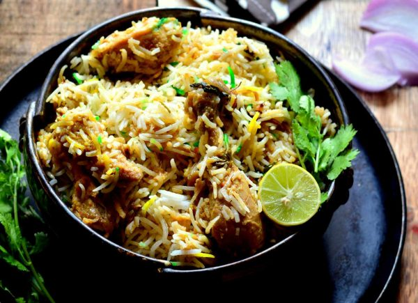
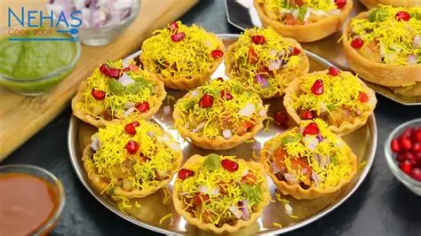
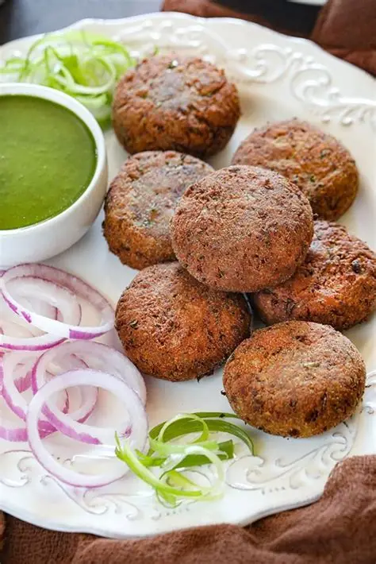
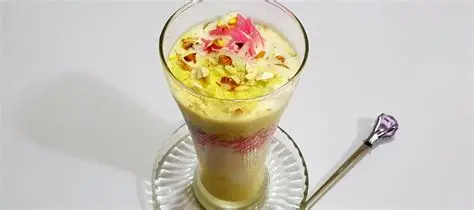
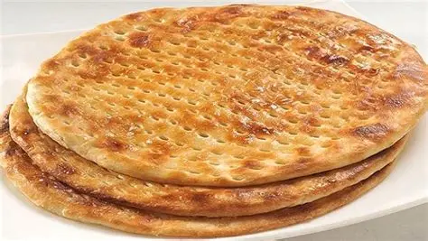

Lucknow’s legendary melt-in-the-mouth buffalo meat kebabs seasoned with over 160 secret spices. It is a masterpiece of Awadhi cuisine.

Unlike other spicy versions, this 'Dum' cooked biryani is famous for its light, subtle aroma and tender meat, reflecting royal elegance.

A crispy potato "tokri" (basket) filled with tangy chickpeas, chutneys, pomegranate seeds, and yogurt. A crunchy Lucknawi street treat.

Originally made for an aging Nawab, these kebabs are so soft they melt instantly. Best enjoyed with Ulte Tawe ka Paratha.

Creamy, rich, and traditionally made kulfi served with vermicelli (falooda) and rose syrup. Prakash Kulfi in Aminabad is the most famous spot.

A saffron-flavored traditional flatbread made with flour, milk, and ghee. This slightly sweet bread is the perfect partner for rich curries.